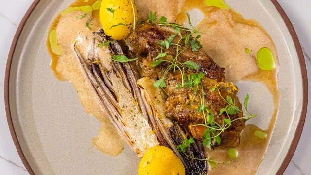

Cabrito Assado

Cabrito Assado
Ingredientes
- Cabrito assado:
- 2kg de cabrito cortado em pedaços
- Azeite q.b.
- Ramos de alecrim q.b.
- Vinho branco q.b.
- 500g de batatinhas escalfadas
- 1 cebola grande em rodelas
- Ramos de alecrim q.b.
- Ramos de tomilho q.b.
- Molho:
- Sucos do cabrito corado
- 2 colheres de sopa de massa de pimentão
- 1 colher de sopa de banha de porco
- 2 dentes de alho
- Acompanhamento:
- Azeite q.b.
- 2 endívias
- Ramos de tomilho q.b.
- Manteiga q.b.
- Acabamento:
- Salsa q.b.
- Raspa de laranja q.b.
- Sal q.b.
- Pimenta q.b.
- Azeite de ervas q.b.
Modo de Preparo
- Comece por corar o cabrito numa frigideira com azeite. Adicione os ramos de alecrim e regue com o vinho branco.
- De seguida, retire a carne para uma taça.
- Para o molho, transfira os sucos da carne para um tacho. Junte a massa de pimentão e a banha de porco. Assim que a gordura dissolver, junte os dentes de alho e triture com a varinha mágica.
- Numa travessa de ir ao forno, coloque um pouco do molho e, por cima, a carne, as batatas, a cebola e os ramos de alecrim e tomilho. Regue com o restante molho, tempere com sal e pimenta e cubra com papel de alumínio. Leve ao forno de 2 a 3 horas a 120ºC.
- Para o acompanhamento, numa frigideira com um fio de azeite coloque as endívias, core um pouco, vire e adicione o tomilho. Depois junte a manteiga e tempere com sal e pimenta.
- Para servir, coloque as endívias, a carne e as batatas no centro de um prato e regue com o molho do assado. Por fim, tempere com salsa, azeite de ervas, raspa de laranja, sal e pimenta.